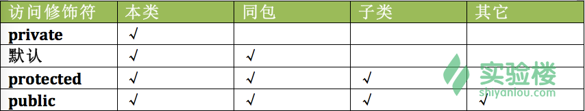

ArrayList<Egg> myList = new ArrayList<Egg>(); //创建新的ArrayList对象Egg s = new Egg();myList.add(s);//此ArrayList会产生一个“盒子”来放Egg对象，可以指定索引值，例如myList.add(9,s)Egg b =new Egg();myList.add(b);int theSize = myList.size();//查询大小boolean isIn = myList.contains(s);//查询是否包含对象sint idx = myList.indexOf(b);//查询对象b在数组的哪个地方，返回1boolean empty = myList.isEmpty();//判断集合是否为空，返回falsemyList,remove(s);//指定删除对象s
public interface Pet{public abstract void beFriendly();public abstract void play();}public class Dog extends Canine implements Pet{public void beFrinendly(){……};public void play(){……};public void roam(){……};}
内部类 对象名 = 外部类对象.new 内部类();
内部类的主要作用如下：
内部类提供了更好的封装，可以把内部类隐藏在外部类之内，不允许同一个包中的其他类访问该类
内部类的方法可以直接访问外部类的所有数据，包括私有的数据
内部类所实现的功能使用外部类同样可以实现，只是有时使用内部类更方便
我们通过代码来详细学习一下内部类吧！
package com.shiyanlou;
//外部类Peoplepublic class People {
private String name = "LiLei"; //外部类的私有属性//内部类Studentpublic class Student {
String ID = "20151234"; //内部类的成员属性//内部类的方法public void stuInfo(){
System.out.println("访问外部类中的name：" + name);
System.out.println("访问内部类中的ID：" + ID);
}
}
//测试成员内部类public static void main(String[] args) {
People a = new People(); //创建外部类对象，对象名为a
Student b = a.new Student(); //使用外部类对象创建内部类对象，对象名为b
b.stuInfo(); //调用内部对象的suInfo方法
}
}
由此，我们可以知道，成员内部类的使用方法：
Student 类相当于 People 类的一个成员变量，所以 Student 类可以使用任意访问修饰符
Student 类在 People 类里，所以访问范围在类里的所有方法均可以访问 People 的属性（即内部类里可以直接访问外部类的方法和属性，反之不行）
定义成员内部类后，必须使用外部类对象来创建内部类对象，即 内部类 对象名 = 外部类对象.new 内部类();
如果外部类和内部类具有相同的成员变量或方法，内部类默认访问自己的成员变量或方法，如果要访问外部类的成员变量，可以使用 this 关键字
package com.shiyanlou;
//外部类Peoplepublic class People {
private String name = "LiLei"; //外部类的私有属性/*外部类的静态变量。
Java 中被 static 修饰的成员称为静态成员或类成员。它属于整个类所有，而不是某个对象所有，即被类的所有对象所共享。静态成员可以使用类名直接访问，也可以使用对象名进行访问。
/*
static String ID = "510xxx199X0724XXXX";
//静态内部类Student
public static class Student {
String ID = "20151234"; //内部类的成员属性
//内部类的方法
public void stuInfo(){
System.out.println("访问外部类中的ID：" + People.ID);
System.out.println("访问内部类中的ID：" + ID);
}
}
//测试成员内部类
public static void main(String[] args) {
Student b = new Student(); //直接创建内部类对象，对象名为b
b.stuInfo(); //调用内部对象的suInfo方法
}
}
静态内部类是 static 修饰的内部类，这种内部类的特点是：
静态内部类不能直接访问外部类的非静态成员，但可以通过 new 外部类().成员 的方式访问
如果外部类的静态成员与内部类的成员名称相同，可通过类名.静态成员访问外部类的静态成员；如果外部类的静态成员与内部类的成员名称不相同，则可通过成员名直接调用外部类的静态成员
创建静态内部类的对象时，不需要外部类的对象，可以直接创建 内部类 对象名= new 内部类();
方法内部类就是定义在外部类的方法中的内部类，方法内部类只在该方法的内部可见，即只在该方法内可以使用。
从字面意思我们就可以知道，内部类（ Inner Class ）就是定义在另外一个类里面的类，而包含内部类的类被称为外部类。
Animal a = new Animal(); //a是父类的引用指向的是本类的对象Animal b = new Dog(); //b是父类的引用指向的是子类的对象//注意：我们不能使用一个子类的引用去指向父类的对象- //注意：对象b不能调用Dog类的独有方法，优先调用Dog类的重写方法。————父类设定接口函数的必要
Animal a = new Animal(); //a是父类的引用指向的是本类的对象Animal b = new Dog(); //b是父类的引用指向的是子类的对象//这边是引用的多态a.bark(); //调用的是父类Animal的方法b.bark(); //调用的是子类Dog重写的方法//这便是方法的多态